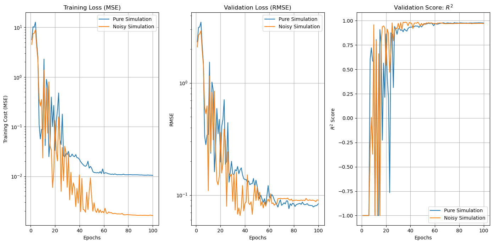

Quantum Neural Networks
A Quantum Neural Network is built for a 2D CFD problem of determining the lift coefficient for varying angles of attack, \(\alpha\in[0,15°]\). The tutorial below shows for a single feature (soon to be extended to multiple features).
Install Necessary Libraries
Depending the environment manager, change the first command word to “mamba”/”conda”/”micromamba” for mamba users, miniconda/anaconda users and micromamba users respectively.
[ ]:
!conda install pandas scipy scikit-learn -c conda-forge -y
Import Necessary Libraries
[1]:
from NoisyCircuits import QuantumCircuit as QC
import pandas as pd
from scipy.optimize import minimize
from sklearn.metrics import root_mean_squared_error, r2_score
from sklearn.model_selection import train_test_split
import matplotlib.pyplot as plt
import numpy as np
from NoisyCircuits.utils.CreateNoiseModel import GetNoiseModel, CreateNoiseModel
import pickle
import os
import json
2026-03-05 15:41:01,206 INFO util.py:154 -- Missing packages: ['ipywidgets']. Run `pip install -U ipywidgets`, then restart the notebook server for rich notebook output.
Import and Pre-process Data
[ ]:
airfoil_simulation_data = "https://raw.githubusercontent.com/Sats2/NoisyCircuits/main/examples/design_study_single_feature.csv"
data = pd.read_csv(airfoil_simulation_data, header=0)
X = data.iloc[:,0].values.reshape(-1, 1)
Y = data.iloc[:,-1].values.reshape(-1, 1)
[3]:
x_train, x_test, y_train, y_test = train_test_split(X, Y, test_size=0.4, random_state=42)
[4]:
x_train = x_train.flatten()
x_test = x_test.flatten()
y_train = y_train.flatten()
y_test = y_test.flatten()
[5]:
beta_x = np.linalg.norm(x_train)
beta_y = np.linalg.norm(y_train)
x_train = x_train / beta_x
y_train = y_train / beta_y
x_test = x_test / beta_x
y_test = y_test / beta_y
Initialize Quantum Circuit Instance with Noise
[ ]:
api_json = json.load(open(os.path.join(os.path.expanduser("~"), "ibm_api.json"), "r"))
token = api_json["apikey"] # Replace with your IBM Quantum token
service_crn = api_json["service-crn"] # Replace with your Service CRN
backend_name = "ibm_fez"
num_qubits = 3
num_cores = 20
num_trajectories = 50
threshold = 1e-4
jsonize = True
noise_model = None
verbose = True
qpu_type = "heron"
sim_backend = "pennylane" # Choose between "pennylane", "qulacs", and "qiskit"
Run the code below to get the latest calibration data from IBM hardware. This requires a valid IBM Quantum Token as well as a service-crn for available quantum backend instances. If not available, please skip this cell and execute the next cell to utilize the sample noise data.
[7]:
noise_model = GetNoiseModel(backend_name=backend_name, token=token, service_crn=service_crn).get_noise_model()
Warning: Found relaxation time anomaly for qubit 72 with $T_2 \geq 2T_1$. Setting $T_2 = 2T_1$.
Run the code below to use a sample noise model from IBM Hardware
[ ]:
if noise_model is None:
if qpu_type == "eagle":
file_path = "https://raw.githubusercontent.com/Sats2/NoisyCircuits/main/noise_models/Noise_Model_Eagle_QPU.pkl"
noise_model = pickle.load(open(file_path, "rb"))
elif qpu_type == "heron":
file_path = "https://raw.githubusercontent.com/Sats2/NoisyCircuits/main/noise_models/Sample_Noise_Model_Heron_QPU.csv"
noise_model = CreateNoiseModel(calibration_data_file=file_path,
basis_gates=[["x", "sx", "rz", "rx"], ["cz", "rzz"]]).create_noise_model()
else:
raise ValueError("Invalid qpu_type. Choose either 'heron' or 'eagle'.")
[8]:
nqc = QC(num_qubits=num_qubits,
noise_model=noise_model,
num_cores=num_cores,
backend_qpu_type=qpu_type,
num_trajectories=num_trajectories,
sim_backend=sim_backend,
threshold=threshold,
jsonize=jsonize,
verbose=verbose)
Completed Extraction of Measurement Errors.
Completed Extraction of two-qubit gate Errors.
Starting post-processing on Single Qubit Errors.
Successfully switched backend to pennylane.
Completed post-processing on Single Qubit Errors.
Processing two-qubit gate errors.
Qubit pair (0, 1): 17/48 errors above threshold (31 filtered out)
Qubit pair (1, 2): 18/144 errors above threshold (126 filtered out)
Qubit pair (1, 0): 17/48 errors above threshold (31 filtered out)
Qubit pair (2, 1): 18/144 errors above threshold (126 filtered out)
Qubit pair (0, 1): 17/48 errors above threshold (31 filtered out)
Qubit pair (1, 2): 18/144 errors above threshold (126 filtered out)
Qubit pair (1, 0): 17/48 errors above threshold (31 filtered out)
Qubit pair (2, 1): 18/144 errors above threshold (126 filtered out)
Two Qubit Gate errors processed.
Building Noise Operators for Two Qubit Gate Errors.
Completed building Noise Operators for Two Qubit Gate Errors.
Extracting Measurement Errors.
Preparing Qubit Connectivity Map for Requested Qubits
Qubit Connectivity Map Prepared.
Returning Single Qubit Error Instructions, Two Qubit Gate Error Instructions, Measurement Errors and Connectivity Map.
2026-03-05 15:43:13,321 INFO worker.py:2007 -- Started a local Ray instance.
/Users/adam-ukj7r05xnu2fywx/miniconda3/envs/NoisyCircuits/lib/python3.10/site-packages/ray/_private/worker.py:2046: FutureWarning: Tip: In future versions of Ray, Ray will no longer override accelerator visible devices env var if num_gpus=0 or num_gpus=None (default). To enable this behavior and turn off this error message, set RAY_ACCEL_ENV_VAR_OVERRIDE_ON_ZERO=0
warnings.warn(
Running the QNN
Build Quantum Circuit for Quantum Neural Network
Here, the original circuit is modified and the single feature is embedded across \(3\) qubits.
[9]:
def quantum_circuit_pure(weights, x_value):
# Reset the quantum circuit
nqc.refresh()
# Build the trainable layers
total_layers = len(weights) // 3
for layers in range(total_layers):
for q in range(num_qubits):
nqc.RY(weights[3*layers + q], qubit=q)
for q in range(num_qubits - 1):
nqc.CX(control=q, target=q+1)
for q in range(num_qubits):
nqc.RX(x_value, qubit=q)
# Execute the circuit
probs = nqc.run_pure_state(qubits=list(range(num_qubits)))
# Obtain the expectation value from the output probability distribution
exp_val = 0.0
for i in range(2**num_qubits):
binary_val = bin(i)[2:].zfill(2**num_qubits)
exp_val += probs[i] * (1 if binary_val.count("1") % 2 == 0 else -1)
return exp_val
[10]:
def quantum_circuit_noisy(weights, x_value):
nqc.refresh()
total_layers = len(weights) // 3
# Build the trainable layers
total_layers = len(weights) // 3
for layers in range(total_layers):
for q in range(num_qubits):
nqc.RY(weights[3*layers + q], qubit=q)
for q in range(num_qubits - 1):
nqc.CX(control=q, target=q+1)
for q in range(num_qubits):
nqc.RX(x_value, qubit=q)
# Execute circuit
probs = nqc.execute(qubits=list(range(num_qubits)), num_trajectories=50)
exp_val = 0.0
for i in range(2**num_qubits):
binary_val = bin(i)[2:].zfill(2**num_qubits)
exp_val += probs[i] * (1 if binary_val.count("1") % 2 == 0 else -1)
return exp_val
Define Functions
Next we define the functions for predictions, loss function and accuracy functions
[11]:
def predict(circuit_builder:callable,
x_array:np.ndarray,
weights:np.ndarray)->np.ndarray:
predictions = [circuit_builder(weights, x) for x in x_array]
return np.array(predictions)
def loss_function(circuit_builder:callable,
x_array:np.ndarray=x_train,
y_array:np.ndarray=y_train,
weights:np.ndarray=None)->float:
predictions = predict(circuit_builder, x_array, weights)
cost_mse = np.mean((predictions - y_array) ** 2) * beta_y**2
return cost_mse
def accuracy_function(circuit_builder:callable,
x_array:np.ndarray=x_test,
y_array:np.ndarray=y_test,
weights:np.ndarray=None)->list[float]:
predictions = predict(circuit_builder, x_array, weights) * beta_y
rmse = root_mean_squared_error(y_array*beta_y, predictions)
r2 = r2_score(y_array*beta_y, predictions)
return [rmse, r2]
[12]:
def cost_function(circuit_builder:callable,
weights_init:np.ndarray,
max_iter:int=100)->tuple[np.ndarray, list, list]:
cost_list = []
accuracy_list = []
def objective(weights:np.ndarray,
circuit_builder:callable)->float:
global iteration
loss = loss_function(circuit_builder, weights=weights)
accuracy = accuracy_function(circuit_builder, weights=weights)
iteration += 1
print(f"Epoch: {iteration}\tLoss: {loss}\tRMSE: {accuracy[0]}\tR2: {accuracy[1]}")
cost_list.append(loss)
accuracy_list.append(accuracy)
return loss
opt = minimize(objective, x0=weights_init,
args=(circuit_builder,),
method="COBYLA", options={"maxiter": max_iter})
weights = opt.x
return (weights, cost_list, accuracy_list)
[2026-03-05 15:43:43,880 E 151180 151911] core_worker_process.cc:842: Failed to establish connection to the metrics exporter agent. Metrics will not be exported. Exporter agent status: RpcError: Running out of retries to initialize the metrics agent. rpc_code: 14
Run the QNN
[13]:
max_iter = 100
num_layers = 3
weights_init = np.random.uniform(-2*np.pi, 2*np.pi, size=(num_qubits*num_layers))
Run the QNN with Pure Statevector Simulation
[14]:
iteration = 0
weights_pure, cost_list_pure, accuracy_list_pure = cost_function(circuit_builder=quantum_circuit_pure,
weights_init=weights_init,
max_iter=max_iter)
Epoch: 1 Loss: 5.624475635279915 RMSE: 2.3263326725509565 R2: -17.999987825269194
Epoch: 2 Loss: 10.256273619099021 RMSE: 3.1288952905183685 R2: -33.370966248398624
Epoch: 3 Loss: 10.123628565956542 RMSE: 3.1568774344527357 R2: -33.98848385192963
Epoch: 4 Loss: 12.742063729564943 RMSE: 3.488392896762202 R2: -41.722874868266395
Epoch: 5 Loss: 5.031882534274923 RMSE: 2.1687989661353155 R2: -15.513847787161065
Epoch: 6 Loss: 2.477561628933786 RMSE: 1.4975380152365372 R2: -6.873455800971476
Epoch: 7 Loss: 0.1118208176618724 RMSE: 0.3361736341570869 R2: 0.6032316875907078
Epoch: 8 Loss: 0.056526932149671597 RMSE: 0.2816939733993672 R2: 0.7214104680984412
Epoch: 9 Loss: 0.08866332044551922 RMSE: 0.34302143955497566 R2: 0.5869028368434204
Epoch: 10 Loss: 0.08747661153242277 RMSE: 0.3469283791998922 R2: 0.5774390731129146
Epoch: 11 Loss: 2.2990180593309972 RMSE: 1.5326150329816366 R2: -7.246617368912856
Epoch: 12 Loss: 0.04163023241326574 RMSE: 0.23567884799285768 R2: 0.8049926882253668
Epoch: 13 Loss: 0.8996804911540089 RMSE: 1.0181632961858122 R2: -2.6395237381792054
Epoch: 14 Loss: 0.637941607088017 RMSE: 0.8661416745649975 R2: -1.6338288635584202
Epoch: 15 Loss: 0.024843453841660323 RMSE: 0.16140111505364627 R2: 0.908541780212452
Epoch: 16 Loss: 0.049274862116079454 RMSE: 0.2611627231492119 R2: 0.7605405068732534
Epoch: 17 Loss: 0.39466311627364214 RMSE: 0.5912961861099234 R2: -0.22749529953139724
Epoch: 18 Loss: 0.10143484724052919 RMSE: 0.3522892372988628 R2: 0.5642790589860021
Epoch: 19 Loss: 0.2675096473342142 RMSE: 0.47344088597396233 R2: 0.21306075692274906
Epoch: 20 Loss: 0.03311129986313426 RMSE: 0.19692326083992603 R2: 0.8638543657740075
Epoch: 21 Loss: 0.12304272599974352 RMSE: 0.4084067435330254 R2: 0.41440751988532953
Epoch: 22 Loss: 0.21257848025991657 RMSE: 0.4753028437288624 R2: 0.2068588045890355
Epoch: 23 Loss: 0.477272173755276 RMSE: 0.7091414461828282 R2: -0.7655312930425084
Epoch: 24 Loss: 0.055183946830144284 RMSE: 0.18831919087641827 R2: 0.8754915458151485
Epoch: 25 Loss: 0.04362924842118576 RMSE: 0.1990519223489892 R2: 0.8608950980475055
Epoch: 26 Loss: 0.17889820146478735 RMSE: 0.44235093529192704 R2: 0.3130208095071527
Epoch: 27 Loss: 0.025812073521861868 RMSE: 0.13033090327391225 R2: 0.9403645511193397
Epoch: 28 Loss: 0.024590837164087925 RMSE: 0.15939362230497256 R2: 0.9108027299222627
Epoch: 29 Loss: 0.029298454956674713 RMSE: 0.1999351987427846 R2: 0.8596578260518309
Epoch: 30 Loss: 0.027458401868174047 RMSE: 0.1546415039568875 R2: 0.9160420527474227
Epoch: 31 Loss: 0.03184353370320631 RMSE: 0.15146162800105903 R2: 0.9194593883740356
Epoch: 32 Loss: 0.024673543023602477 RMSE: 0.16842674505150187 R2: 0.900406316853913
Epoch: 33 Loss: 0.02516882127974981 RMSE: 0.16396479662873725 R2: 0.905613276259033
Epoch: 34 Loss: 0.02804215179854995 RMSE: 0.1798671454808002 R2: 0.8864169917098521
Epoch: 35 Loss: 0.02556621954774139 RMSE: 0.15476820735742358 R2: 0.915904416794627
Epoch: 36 Loss: 0.024856395901754817 RMSE: 0.1675550175615066 R2: 0.9014345843978586
Epoch: 37 Loss: 0.02736669655161073 RMSE: 0.17483821163484278 R2: 0.8926795726584459
Epoch: 38 Loss: 0.02368365676485241 RMSE: 0.15188225958200352 R2: 0.9190114205649377
Epoch: 39 Loss: 0.023463939020101385 RMSE: 0.1402975313683289 R2: 0.9308949570956291
Epoch: 40 Loss: 0.021969282315542182 RMSE: 0.13746305515767185 R2: 0.9336590530742144
Epoch: 41 Loss: 0.019726788037750183 RMSE: 0.13759752396471417 R2: 0.9335291978019346
Epoch: 42 Loss: 0.01828634153977444 RMSE: 0.12871925988690386 R2: 0.9418303098943367
Epoch: 43 Loss: 0.01724065795595123 RMSE: 0.13382851825232595 R2: 0.93712079804227
Epoch: 44 Loss: 0.01624450488340495 RMSE: 0.12363519440536096 R2: 0.9463346564047754
Epoch: 45 Loss: 0.015928292614271884 RMSE: 0.1263777801293038 R2: 0.943927344074128
Epoch: 46 Loss: 0.016859195228429928 RMSE: 0.12638456317223118 R2: 0.9439213247653724
Epoch: 47 Loss: 0.020167137040423198 RMSE: 0.14075003036070277 R2: 0.9304484718412175
Epoch: 48 Loss: 0.014604844736702805 RMSE: 0.11790639377341161 R2: 0.9511927436321724
Epoch: 49 Loss: 0.01587742018675478 RMSE: 0.13582681288577755 R2: 0.9352289850007534
Epoch: 50 Loss: 0.014606383860134735 RMSE: 0.12055189861800737 R2: 0.9489779632246853
Epoch: 51 Loss: 0.012447143914686511 RMSE: 0.10342618665109943 R2: 0.9624447457039474
Epoch: 52 Loss: 0.011928550243700499 RMSE: 0.0925946422576672 R2: 0.9698989671011117
Epoch: 53 Loss: 0.011863423885004944 RMSE: 0.09973844271047932 R2: 0.965075125987072
Epoch: 54 Loss: 0.01176118919258738 RMSE: 0.09194272643371072 R2: 0.9703213297731221
Epoch: 55 Loss: 0.011887419913209412 RMSE: 0.08612023477055245 R2: 0.9739612523745845
Epoch: 56 Loss: 0.011637584913441586 RMSE: 0.09287464876370033 R2: 0.9697166405921993
Epoch: 57 Loss: 0.01243720276070692 RMSE: 0.08094871787943939 R2: 0.9769946083526029
Epoch: 58 Loss: 0.011396611410690136 RMSE: 0.09895172209281408 R2: 0.9656239164861884
Epoch: 59 Loss: 0.014071801235200682 RMSE: 0.12165511133718042 R2: 0.9480398491522101
Epoch: 60 Loss: 0.011333554948988652 RMSE: 0.09562675190502685 R2: 0.9678953092137456
Epoch: 61 Loss: 0.011786860896550773 RMSE: 0.09414012567617856 R2: 0.9688857576823476
Epoch: 62 Loss: 0.01174708910342373 RMSE: 0.10117135033222278 R2: 0.9640644103585116
Epoch: 63 Loss: 0.011465220745184426 RMSE: 0.09736642119004646 R2: 0.9667165683907566
Epoch: 64 Loss: 0.01119708894825815 RMSE: 0.09050227944270203 R2: 0.971243983929868
Epoch: 65 Loss: 0.011120505904902895 RMSE: 0.08602419594126813 R2: 0.9740192953298269
Epoch: 66 Loss: 0.010919179193651056 RMSE: 0.08252085764827106 R2: 0.9760923357488179
Epoch: 67 Loss: 0.011108097973394177 RMSE: 0.078033894827293 R2: 0.978621548242831
Epoch: 68 Loss: 0.01085630868563102 RMSE: 0.08561054879539333 R2: 0.9742685509288905
Epoch: 69 Loss: 0.01116675120888012 RMSE: 0.09074539276884533 R2: 0.9710892837264027
Epoch: 70 Loss: 0.010922181307696104 RMSE: 0.08094204588043562 R2: 0.9769984005219806
Epoch: 71 Loss: 0.010724855828414573 RMSE: 0.08268169486345925 R2: 0.975999050498697
Epoch: 72 Loss: 0.010839045767316237 RMSE: 0.08543025014763797 R2: 0.9743768193661333
Epoch: 73 Loss: 0.01079763891035304 RMSE: 0.08332417772596999 R2: 0.9756245997684727
Epoch: 74 Loss: 0.010762870039194574 RMSE: 0.08885958191072288 R2: 0.9722784050736921
Epoch: 75 Loss: 0.01077643310170626 RMSE: 0.08848557427423549 R2: 0.9725112728966258
Epoch: 76 Loss: 0.011036851074949294 RMSE: 0.07552436933417164 R2: 0.9799744756297774
Epoch: 77 Loss: 0.010756185037284125 RMSE: 0.08370363284921756 R2: 0.9754020849740379
Epoch: 78 Loss: 0.010744048831335243 RMSE: 0.08068222561783285 R2: 0.9771458316810657
Epoch: 79 Loss: 0.010747879491325042 RMSE: 0.08470747238627836 R2: 0.9748085522002047
Epoch: 80 Loss: 0.010756202330789085 RMSE: 0.08328432600101442 R2: 0.9756479103962996
Epoch: 81 Loss: 0.010772273553337396 RMSE: 0.0790749893785625 R2: 0.9780472987768977
Epoch: 82 Loss: 0.010794595208431207 RMSE: 0.08193628863772841 R2: 0.9764298547450047
Epoch: 83 Loss: 0.010718683551812951 RMSE: 0.08293667919214984 R2: 0.975850787872555
Epoch: 84 Loss: 0.010706845466633235 RMSE: 0.0835955837287855 R2: 0.9754655485917667
Epoch: 85 Loss: 0.010731753618612346 RMSE: 0.08431533291488678 R2: 0.9750412517519697
Epoch: 86 Loss: 0.010725806339543948 RMSE: 0.08248031908101684 R2: 0.9761158193728655
Epoch: 87 Loss: 0.010735109190576497 RMSE: 0.08638788534765193 R2: 0.9737991507345223
Epoch: 88 Loss: 0.010704163688681446 RMSE: 0.08301213151373499 R2: 0.975806827999099
Epoch: 89 Loss: 0.01064786321252313 RMSE: 0.08194782020094425 R2: 0.9764232198399854
Epoch: 90 Loss: 0.010625210691170003 RMSE: 0.08266722721123593 R2: 0.9760074491414962
Epoch: 91 Loss: 0.01065063927195375 RMSE: 0.08380762137529763 R2: 0.9753409289707736
Epoch: 92 Loss: 0.010581834125693105 RMSE: 0.08121251613362059 R2: 0.9768444226329858
Epoch: 93 Loss: 0.010527412819122344 RMSE: 0.08100230000688069 R2: 0.9769641425013665
Epoch: 94 Loss: 0.010519893720511998 RMSE: 0.08062928208584859 R2: 0.9771758155688085
Epoch: 95 Loss: 0.010511340031323958 RMSE: 0.0805034013782584 R2: 0.9772470274563669
Epoch: 96 Loss: 0.010627894280638272 RMSE: 0.07832204986827945 R2: 0.9784633687052513
Epoch: 97 Loss: 0.01052166163616959 RMSE: 0.0798067929531968 R2: 0.9776390937845768
Epoch: 98 Loss: 0.01052496017149392 RMSE: 0.08033010123720863 R2: 0.9773448829288977
Epoch: 99 Loss: 0.010493008428832742 RMSE: 0.08099102627882536 R2: 0.9769705542185818
Epoch: 100 Loss: 0.010444576223256695 RMSE: 0.08353040626365921 R2: 0.9755037915202194
Run the QNN with MCWF Method for Noisy Simulation
[15]:
iteration = 0
weights_noisy, cost_list_noisy, accuracy_list_noisy = cost_function(circuit_builder=quantum_circuit_noisy,
weights_init=weights_init,
max_iter=max_iter)
Epoch: 1 Loss: 4.521517619311837 RMSE: 2.0967119286677205 R2: -14.434309833454435
Epoch: 2 Loss: 7.443652749931879 RMSE: 2.671439127997859 R2: -24.055336948004538
Epoch: 3 Loss: 7.650716247285518 RMSE: 2.7471127094563594 R2: -25.49492158493769
Epoch: 4 Loss: 8.844844099501074 RMSE: 2.913813756966095 R2: -28.808029061898775
Epoch: 5 Loss: 4.003612395781483 RMSE: 1.9385066117976664 R2: -12.193021051446234
Epoch: 6 Loss: 2.213275963284736 RMSE: 1.4220560962331623 R2: -6.099751352134751
Epoch: 7 Loss: 0.3685493557501875 RMSE: 0.610515702755674 R2: -0.30858928398072694
Epoch: 8 Loss: 0.25969657918101535 RMSE: 0.5319934991280446 R2: 0.0063754053624891505
Epoch: 9 Loss: 0.35292291363277684 RMSE: 0.6249729450321023 R2: -0.3712988651949316
Epoch: 10 Loss: 0.02344392436438547 RMSE: 0.10930448751530987 R2: 0.958054471872436
Epoch: 11 Loss: 1.377833777491845 RMSE: 1.1527740274462723 R2: -3.6654984370842874
Epoch: 12 Loss: 0.0571033945933719 RMSE: 0.24189564870369096 R2: 0.7945690878116229
Epoch: 13 Loss: 0.5982660432026216 RMSE: 0.8249837084146184 R2: -1.389463642296867
Epoch: 14 Loss: 0.0738894667032874 RMSE: 0.31094262253756694 R2: 0.660554389930347
Epoch: 15 Loss: 0.7973190816384702 RMSE: 0.8453870534104926 R2: -1.5091167367303022
Epoch: 16 Loss: 0.040774805779022344 RMSE: 0.25052986370549213 R2: 0.779642068779217
Epoch: 17 Loss: 0.033540459426493675 RMSE: 0.13376245995826305 R2: 0.9371828575752883
Epoch: 18 Loss: 0.005948087034643151 RMSE: 0.1234608938925938 R2: 0.9464858642126175
Epoch: 19 Loss: 0.012395835685713402 RMSE: 0.1469405893342021 R2: 0.9241958055735353
Epoch: 20 Loss: 0.1334465371906201 RMSE: 0.36173310985950713 R2: 0.5406050611038351
Epoch: 21 Loss: 0.032644549009611654 RMSE: 0.15737586226438247 R2: 0.9130467282926392
Epoch: 22 Loss: 0.020385878271303826 RMSE: 0.19279178737694155 R2: 0.8695071424147622
Epoch: 23 Loss: 0.15792038568026448 RMSE: 0.38865613887510436 R2: 0.46967665436099426
Epoch: 24 Loss: 0.06707699019300309 RMSE: 0.30351448378746304 R2: 0.6765787708743718
Epoch: 25 Loss: 0.004994359356141561 RMSE: 0.07931655880095084 R2: 0.9779129654882868
Epoch: 26 Loss: 0.03810199934982324 RMSE: 0.24324923768809803 R2: 0.7922635728140828
Epoch: 27 Loss: 0.008107112610338186 RMSE: 0.15641615967415415 R2: 0.91410400398304
Epoch: 28 Loss: 0.04033900369611492 RMSE: 0.14670144767079166 R2: 0.9244423431690945
Epoch: 29 Loss: 0.030218909012393994 RMSE: 0.1535518512229478 R2: 0.9172210724587401
Epoch: 30 Loss: 0.006006123880906102 RMSE: 0.0877729929863201 R2: 0.9729522279576359
Epoch: 31 Loss: 0.028353260066615354 RMSE: 0.15425426019562102 R2: 0.9164620109466723
Epoch: 32 Loss: 0.0033721677946085653 RMSE: 0.07351583192887413 R2: 0.9810254522008319
Epoch: 33 Loss: 0.01206276016893459 RMSE: 0.15914226828782013 R2: 0.9110838254174327
Epoch: 34 Loss: 0.0042564840709535725 RMSE: 0.0673714923603544 R2: 0.984064634928808
Epoch: 35 Loss: 0.007387079214675733 RMSE: 0.07682601793297034 R2: 0.9792782548202452
Epoch: 36 Loss: 0.00597742154151818 RMSE: 0.06570258994373436 R2: 0.9848443467266808
Epoch: 37 Loss: 0.0024472689697027108 RMSE: 0.07678682383024188 R2: 0.9792993925300965
Epoch: 38 Loss: 0.0057144493848829145 RMSE: 0.1217880334394898 R2: 0.9479262423244436
Epoch: 39 Loss: 0.0028883731121741385 RMSE: 0.0721631611988259 R2: 0.9817172811102457
Epoch: 40 Loss: 0.010678523898393692 RMSE: 0.08423278814173703 R2: 0.9750900970963555
Epoch: 41 Loss: 0.001936482009965464 RMSE: 0.08690626409765814 R2: 0.9734837659240122
Epoch: 42 Loss: 0.009089006443893264 RMSE: 0.15138848062515864 R2: 0.919537162684023
Epoch: 43 Loss: 0.0021558297246254145 RMSE: 0.0849777531972472 R2: 0.9746475362402218
Epoch: 44 Loss: 0.0021080925825615873 RMSE: 0.08205453334672302 R2: 0.9763617760939701
Epoch: 45 Loss: 0.0018814671540071087 RMSE: 0.08719431927367748 R2: 0.973307695831705
Epoch: 46 Loss: 0.00475944250059377 RMSE: 0.0673507033363791 R2: 0.9840744678585169
Epoch: 47 Loss: 0.0021423842096340634 RMSE: 0.09395861217294939 R2: 0.969005626025483
Epoch: 48 Loss: 0.004919667208337766 RMSE: 0.12276593373456342 R2: 0.9470866296773904
Epoch: 49 Loss: 0.009340271503800374 RMSE: 0.08925477873208376 R2: 0.972031277012903
Epoch: 50 Loss: 0.0037862933238152385 RMSE: 0.11771090114751409 R2: 0.9513544574863759
Epoch: 51 Loss: 0.001978461699659904 RMSE: 0.08972580900010957 R2: 0.9717352956078521
Epoch: 52 Loss: 0.002934082851095879 RMSE: 0.10601805868740301 R2: 0.9605388827404199
Epoch: 53 Loss: 0.002043014655910744 RMSE: 0.08048713646895375 R2: 0.9772562205499137
Epoch: 54 Loss: 0.0018706172261921715 RMSE: 0.08742389765566444 R2: 0.9731669517239635
Epoch: 55 Loss: 0.0022433533790717185 RMSE: 0.07669218124336731 R2: 0.9793503896042127
Epoch: 56 Loss: 0.0018499706096086594 RMSE: 0.08673182821745985 R2: 0.9735901044188885
Epoch: 57 Loss: 0.0021074842133234767 RMSE: 0.079599242800457 R2: 0.9777552486754147
Epoch: 58 Loss: 0.0018620087291821813 RMSE: 0.08722185765953855 R2: 0.97329083282837
Epoch: 59 Loss: 0.0019769778392851665 RMSE: 0.09181655932169795 R2: 0.9704027261620802
Epoch: 60 Loss: 0.0018358709753681023 RMSE: 0.0869785817032606 R2: 0.9734396174745656
Epoch: 61 Loss: 0.002275717704197986 RMSE: 0.10271636504669168 R2: 0.9629584657860849
Epoch: 62 Loss: 0.0018207173823702246 RMSE: 0.08395177797756236 R2: 0.9752560243977645
Epoch: 63 Loss: 0.0017954048158950744 RMSE: 0.08509461451933538 R2: 0.9745777589282056
Epoch: 64 Loss: 0.001922187924388006 RMSE: 0.08105058850346047 R2: 0.9769366692447385
Epoch: 65 Loss: 0.0018383280222977526 RMSE: 0.08343999036787932 R2: 0.9755567937267852
Epoch: 66 Loss: 0.0018676560797634511 RMSE: 0.08327926949319489 R2: 0.9756508673222752
Epoch: 67 Loss: 0.0017852647724133032 RMSE: 0.09288340577034408 R2: 0.9697109295809533
Epoch: 68 Loss: 0.001771528121325174 RMSE: 0.09299581603446201 R2: 0.969637571747569
Epoch: 69 Loss: 0.0017939680215326107 RMSE: 0.09354080660492514 R2: 0.9692806584082804
Epoch: 70 Loss: 0.0017658951286010647 RMSE: 0.09293752316239712 R2: 0.9696756241783324
Epoch: 71 Loss: 0.001742909051115649 RMSE: 0.09267736596329547 R2: 0.9698451587762877
Epoch: 72 Loss: 0.0017523348734844665 RMSE: 0.09331282620474292 R2: 0.9694302160951928
Epoch: 73 Loss: 0.001744055379779454 RMSE: 0.09280763149063188 R2: 0.9697603290682054
Epoch: 74 Loss: 0.0017424306943989757 RMSE: 0.09288944191772794 R2: 0.9697069927047729
Epoch: 75 Loss: 0.0017861232460912038 RMSE: 0.09391675981878121 R2: 0.9690332317676527
Epoch: 76 Loss: 0.001684855166664441 RMSE: 0.09109890681333602 R2: 0.9708635917883901
Epoch: 77 Loss: 0.001676335372403105 RMSE: 0.09005006761803529 R2: 0.971530635770526
Epoch: 78 Loss: 0.0016823459109072756 RMSE: 0.09190361208067 R2: 0.9703465762521554
Epoch: 79 Loss: 0.001698302944540579 RMSE: 0.08826134853886915 R2: 0.972650411295225
Epoch: 80 Loss: 0.00167967893435011 RMSE: 0.09006548456225887 R2: 0.9715208867901272
Epoch: 81 Loss: 0.0016804331088848296 RMSE: 0.08948638722129103 R2: 0.9718859358126333
Epoch: 82 Loss: 0.001673732475786784 RMSE: 0.09027530945967537 R2: 0.9713880370592006
Epoch: 83 Loss: 0.0016647414256029036 RMSE: 0.08940659389215555 R2: 0.9719360510242505
Epoch: 84 Loss: 0.0016529194983633832 RMSE: 0.08947686935171753 R2: 0.9718919159795403
Epoch: 85 Loss: 0.0016584036799297994 RMSE: 0.08925886264704085 R2: 0.9720287174973026
Epoch: 86 Loss: 0.0016464350488114177 RMSE: 0.0903180565946224 R2: 0.9713609339891731
Epoch: 87 Loss: 0.0016384821275294578 RMSE: 0.08940121018722848 R2: 0.9719394307184059
Epoch: 88 Loss: 0.0016334234125424726 RMSE: 0.09005417153697083 R2: 0.9715280408002309
Epoch: 89 Loss: 0.0016357164256859695 RMSE: 0.08917102403212479 R2: 0.9720837428406086
Epoch: 90 Loss: 0.0016437036400383418 RMSE: 0.09337028690211166 R2: 0.9693925556361629
Epoch: 91 Loss: 0.001632632131163786 RMSE: 0.09022897101935334 R2: 0.9714174026403107
Epoch: 92 Loss: 0.0016356870758655554 RMSE: 0.08951569199017907 R2: 0.9718675193566892
Epoch: 93 Loss: 0.0016416638881191316 RMSE: 0.09067345296089349 R2: 0.9711351043880111
Epoch: 94 Loss: 0.0016374279478486437 RMSE: 0.08946777382317232 R2: 0.9718976301912311
Epoch: 95 Loss: 0.0016348783744215012 RMSE: 0.09004566590879721 R2: 0.9715334189067109
Epoch: 96 Loss: 0.0016276854027405968 RMSE: 0.0897590802014717 R2: 0.9717143300676891
Epoch: 97 Loss: 0.0016301474006703792 RMSE: 0.08908290196327195 R2: 0.9721388913109161
Epoch: 98 Loss: 0.0016544703058191078 RMSE: 0.08747732436669994 R2: 0.9731341451434296
Epoch: 99 Loss: 0.001629368436758047 RMSE: 0.09048095141500546 R2: 0.9712575357838956
Epoch: 100 Loss: 0.0016247838774428632 RMSE: 0.09002312941243278 R2: 0.9715476662713869
Visualize the Results
Pre-Processing Training and Validation Data
Segregate the different metrics for quick and easy visualization.
Cap the values of the \(R^2\) Score to lie between \([-1,1]\) for clean visualization, where an \(R^2\) Score of \(-1\).
[16]:
accuracy_data_pure = np.array(accuracy_list_pure)
accuracy_data_noisy = np.array(accuracy_list_noisy)
cost_data_pure = np.array(cost_list_pure)
cost_data_noisy = np.array(cost_list_noisy)
rmse_pure = accuracy_data_pure[:,0]
rmse_noisy = accuracy_data_noisy[:,0]
r2_score_pure = accuracy_data_pure[:,1]
r2_score_noisy = accuracy_data_noisy[:,1]
r2_score_pure_filtered = np.clip(r2_score_pure, -1, 1)
r2_score_noisy_filtered = np.clip(r2_score_noisy, -1, 1)
epoch_list = np.arange(1, max_iter+1, 1, dtype=int)
Visualize the Data
[21]:
fig, ax = plt.subplots(1,3, figsize=(14,7))
for i, metric in enumerate(zip([cost_data_pure, rmse_pure, r2_score_pure_filtered], [cost_data_noisy, rmse_noisy, r2_score_noisy_filtered])):
if i == 2:
ax[i].plot(epoch_list, metric[0], label="Pure Simulation")
ax[i].plot(epoch_list, metric[1], label="Noisy Simulation")
else:
ax[i].semilogy(epoch_list, metric[0], label="Pure Simulation")
ax[i].semilogy(epoch_list, metric[1], label="Noisy Simulation")
ax[i].set_xlabel("Epochs")
ax[i].set_ylabel(["Training Cost (MSE)", "RMSE", "$R^2$ Score"][i])
ax[i].set_title(["Training Loss (MSE)", "Validation Loss (RMSE)", "Validation Score: $R^2$"][i])
ax[i].legend()
ax[i].grid()
plt.tight_layout()
plt.show()

Shutdown Parallel Initialization
[18]:
nqc.shutdown()
Download this Notebook - /examples/quantum_neural_networks.ipynb